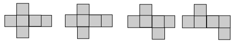

Geometric properties
Prisms
A prisms is a soild with
-
two parallel opposite faces in the shape of congruent polygons. These congruent polygons are called bases of the prism.
-
all other faces in the shape of parallelograms are called lateral face.
-
the perpendicular distance between the two bases is the height of the prism.
-
A right prism is a prism in which the bases of the prism are perpendicular to the lateral faces.
-
the cross section of a prism is the section that is parallel to its base. It is the same shape and as its base.
-
Prisms are named after the shape of their bases.

Cuboid
A cuboid is a solid with six rectangular faces. Opposite faces have the same shapes and sizes.
Cube
A cuboid is a special type of cuboid with six square faces of the same size. All the edges are equal in length.
Pyramids
A pyramid is a soild with
-
A polygon as its base, and
-
lateral triangular faces
-
The lateral triangular faces meet at a common vertex.
-
The perpendicular distance from the common vertex to the base is the height of the pyramid.
-
A right pyramid is a pyramid in which its vertex is vertically above the centre of the base.
-
Pyramids are named after the shape of their bases.
Cylinders
A cylinder is a soild with
-
two parallel opposite faces, called bases, in the shape of congruent circles at both its ends.
-
a curved surface.
-
an axis that joins the centers of two bases at both ends
-
The perpendicular distance between the two bases is the height of the cylinder.
-
A right cylinder is a cylinder in which the axis is perpendicular to the bases.
Cones
A cone is a soild with
-
a base which is a circle.
-
a curved surface which meets at a common vertex.
-
an axis that joins the vertex to the centre of the circular base.
-
The length from the vertex to the base is the slant height of the cone
-
The perpendicular distance from the vertex to the base is the height of the cone.
-
A right cone is a cone in which the vertex is vertically above the centre of the base.
Cones
A sphere is a solid in which all points on its curved surface are equidistant from a fixed point which is the center of the sphere.
The fixed distance from the center to the surface is its radius.
Nets
A net is a flat diagram on one plane that is folded to make a hollow soild. Alternatively if a hollow solid is opened out, the result is its net.
-
A nnet is also known as a layout.
-
A net of a solid may have different shapes.
| Solids | Some possible nets of the solid | |
|---|---|---|
| 1 | Cube
|

|
| 2 | Cuboid
|
|
| 3 | Prism
|
|
| 4 | Cube
|
|
| 5 | Pyramid
|
|
| 6 | Cone
|
|